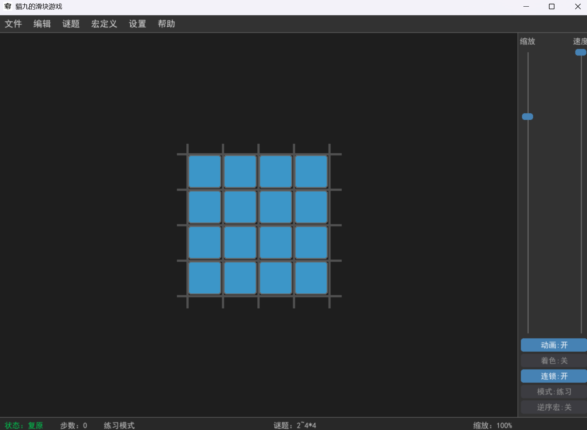
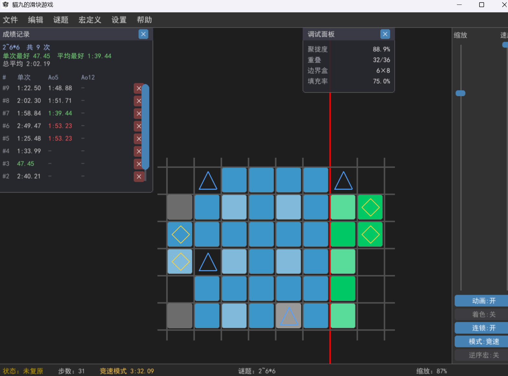

這是貓九製作的第二款原創規則遊戲。玩家（或 AI）透過「選縫隙 → 選滑塊組 → 滑動」把打亂的方塊還原成一個完整的 m×n 或 n×m 實心矩形（允許整體平移與轉置，不是回到初始版面）。
它的難度非常高（目前貓九已推導出 2 級滑塊的通用解法），適合邏輯思維強的人挑戰。
支援平台：瀏覽器 / Windows 系統 / Python + pygame 環境。
貓九把遊戲的不同部分拆成多個連結，供不同需要的人下載。
版本說明：核心上就是兩種架構，Web 版和 Python 版。
| 版本 | 連結 | 需下載 | 依賴 | 介紹 |
|---|---|---|---|---|
| Web 版 | 點擊即玩 | 否 | 聯網・瀏覽器 | 功能較精簡 |
| Win 版 | 雲盤下載 | 是 | Windows 系統 | 完整版，由 Python 版編譯而來 |
| 離線 Web 版 | GitHub 下載 | 是 | 瀏覽器 | 功能較精簡 |
| Python 版 | GitHub 下載 | 是 | Python + pygame 環境 | 完整版 |
| 資料庫 | 雲盤下載 | 是 | Win 版 / Python 版遊戲 | 特殊功能（查表求解器資料） |
說明：資料庫指的是遊戲功能「查表求解器」執行時需要的資料；若缺失，該求解器無法使用。因為它不是核心功能，且與遊戲更新互不相干，所以專門提供連結。
2025 年，貓九發布了遊戲構思，用正方體磁鐵（巴克球）展示：[貓九]我用磁鐵設計了一種高難度謎題：貓九滑塊
2026 年，計畫錄製遊戲介紹並發布到 B 站。


遊戲提供了多種尺寸和難度的謎題，適合不斷挑戰自己。更多內容待更新。
目前 Web 版定位為「體驗版」：能玩、能還原、能計時、能存檔；求解器、宏定義、調試面板等高級功能不在 Web 版實現，完整功能請下載 Windows / Python 版本。
最後更新時間：2026.9.9